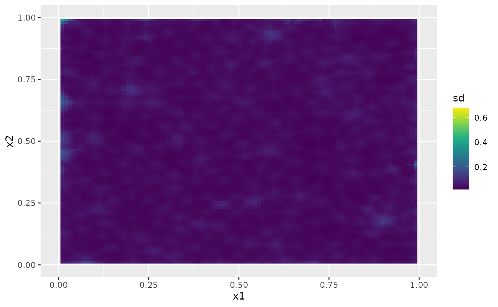

An introduction to the rSPDE package
David Bolin and Alexandre B. Simas
2022-09-15
Source:vignettes/rSPDE.Rmd
rSPDE.RmdIntroduction
In this vignette we provide a brief introduction to the rSPDE package. The main approach for constructing the rational approximations is the covariance-based rational SPDE approach of (Xiong, Simas, and Bolin 2022)(https://arxiv.org/abs/2209.04670). The package contains three main “families” of functions that implement the approach:
To illustrate these different functions, we begin by using the package to generate a simple data set, which then will be analyzed using the different approaches.Further details on each family of functions is given in the following additional vignettes:
The rSPDE package also has a separate group of functions for performing the operator-based rational approximations introduced in (Bolin and Kirchner 2020)(https://www.tandfonline.com/doi/full/10.1080/10618600.2019.1665537). These are especially useful when performing rational approximations for fractional SPDE models with non-Gaussian noise. An example in which such approximation is suitable is when one has the so-called type-G Lévy noises.
We refer the reader to (Wallin and Bolin 2015)(https://onlinelibrary.wiley.com/doi/full/10.1111/sjos.12141), (Bolin 2013)(https://onlinelibrary.wiley.com/doi/abs/10.1111/sjos.12046) and (Asar et al. 2020)(https://rss.onlinelibrary.wiley.com/doi/pdf/10.1111/rssc.12405) for examples of models driven by type-G Lévy noises. We also refer the reader to the ngme package where one can fit such models.
We explore the functions for performing the operator-based rational approximation on the vignette:
A toy data set
We begin by generating a toy data set.
For this illustration, we will simulate a data set on a two-dimensional spatial domain. To this end, we need to construct a mesh over the domain of interest and then compute the matrices needed to define the operator. We will use the R-INLA package to create the mesh and obtain the matrices of interest.
We will begin by defining a mesh over \([0,1]\times [0, 1]\):
library(INLA)
n_loc <- 2000
loc_2d_mesh <- matrix(runif(n_loc * 2), n_loc, 2)
mesh_2d <- inla.mesh.2d(
loc = loc_2d_mesh,
cutoff = 0.05,
max.edge = c(0.1, 0.5)
)
plot(mesh_2d, main = "")
We now use the matern.operators() function to construct a rational SPDE approximation of order \(m=2\) for a Gaussian random field with a Matérn covariance function on \([0,1]\times [0, 1]\). We choose \(\nu=0.5\) which corresponds to exponential covariance. We also set \(\sigma=1\) and the range as \(0.2\).
library(rSPDE)
sigma <- 1
range <- 0.2
nu <- 0.5
kappa <- sqrt(8 * nu) / range
op <- matern.operators(
mesh = mesh_2d, nu = nu,
kappa = kappa, sigma = sigma, m = 2
)We can now use the simulate function to simulate a realization of the field \(u\):
u <- simulate(op)Let us now consider a simple Gaussian linear model where the spatial field \(u(\mathbf{s})\) is observed at \(m\) locations, \(\{\mathbf{s}_1 , \ldots , \mathbf{s}_m \}\) under Gaussian measurement noise. For each \(i = 1,\ldots,m,\) we have \[ \begin{align} y_i &= u(\mathbf{s}_i)+\varepsilon_i\\ \end{align}, \] where \(\varepsilon_1,\ldots,\varepsilon_{m}\) are iid normally distributed with mean 0 and standard deviation 0.1.
To generate a data set y from this model, we first draw some observation locations at random in the domain and then use the R-INLA function inla.spde.make.A() to construct the observation matrix which can be used to evaluate the simulated field \(u\) at the observation locations. After this we simply add the measurment noise.
A <- inla.spde.make.A(
mesh = mesh_2d,
loc = loc_2d_mesh
)
sigma.e <- 0.1
y <- A %*% u + rnorm(n_loc) * sigma.eThe generated data can be seen in the following image.

The simulated random field is shown in the following figure.

Fitting the model with R-INLA implementation of the rational SPDE approach
We will now fit the model of the toy data set using our R-INLA implementation of the rational SPDE approach. Further details on this implementation can be found in R-INLA implementation of the rational SPDE approach.
We begin by creating the \(A\) matrix, the index, and the inla.stack object.
Abar <- rspde.make.A(mesh = mesh_2d, loc = loc_2d_mesh)
mesh.index <- rspde.make.index(name = "field", mesh = mesh_2d)
st.dat <- inla.stack(
data = list(y = as.vector(y)),
A = Abar,
effects = mesh.index
)We now create the model object. We need to set an upper bound for the smoothness parameter \(\nu\). The default value for this is \(4\). If we increase the upper bound for \(\nu\) we also increase the computational cost, and if we decrease the upper bound we also decrease the computatoinal cost. For this example we set nu_upper_bound=2. See the R-INLA implementation of the rational SPDE approach for further details.
rspde_model <- rspde.matern(
mesh = mesh_2d,
nu_upper_bound = 2
)Finally, we create the formula and fit the model to the data:
f <-
y ~ -1 + f(field, model = rspde_model)
rspde_fit <-
inla(f,
data = inla.stack.data(st.dat),
family = "gaussian",
control.predictor =
list(A = inla.stack.A(st.dat)),
inla.mode = "experimental"
)We can get a summary of the fit:
summary(rspde_fit)
#>
#> Call:
#> c("inla.core(formula = formula, family = family, contrasts = contrasts,
#> ", " data = data, quantiles = quantiles, E = E, offset = offset, ", "
#> scale = scale, weights = weights, Ntrials = Ntrials, strata = strata,
#> ", " lp.scale = lp.scale, link.covariates = link.covariates, verbose =
#> verbose, ", " lincomb = lincomb, selection = selection, control.compute
#> = control.compute, ", " control.predictor = control.predictor,
#> control.family = control.family, ", " control.inla = control.inla,
#> control.fixed = control.fixed, ", " control.mode = control.mode,
#> control.expert = control.expert, ", " control.hazard = control.hazard,
#> control.lincomb = control.lincomb, ", " control.update =
#> control.update, control.lp.scale = control.lp.scale, ", "
#> control.pardiso = control.pardiso, only.hyperparam = only.hyperparam,
#> ", " inla.call = inla.call, inla.arg = inla.arg, num.threads =
#> num.threads, ", " blas.num.threads = blas.num.threads, keep = keep,
#> working.directory = working.directory, ", " silent = silent, inla.mode
#> = inla.mode, safe = FALSE, debug = debug, ", " .parent.frame =
#> .parent.frame)")
#> Time used:
#> Pre = 3.93, Running = 7.85, Post = 0.14, Total = 11.9
#> Random effects:
#> Name Model
#> field RGeneric2
#>
#> Model hyperparameters:
#> mean sd 0.025quant 0.5quant
#> Precision for the Gaussian observations 101.716 3.387 95.091 101.705
#> Theta1 for field -4.046 0.554 -5.612 -4.212
#> Theta2 for field 2.737 0.133 2.644 2.775
#> Theta3 for field 0.078 0.296 -0.117 0.166
#> 0.975quant mode
#> Precision for the Gaussian observations 108.437 101.76
#> Theta1 for field -3.681 -3.60
#> Theta2 for field 3.111 2.63
#> Theta3 for field 0.914 -0.16
#>
#> Marginal log-Likelihood: 1031.81
#> is computed
#> Posterior summaries for the linear predictor and the fitted values are computed
#> (Posterior marginals needs also 'control.compute=list(return.marginals.predictor=TRUE)')To get a summary of the fit of the random field only, we can do the following:
result_fit <- rspde.result(rspde_fit, "field", rspde_model)
summary(result_fit)
#> mean sd 0.025quant 0.5quant 0.975quant mode
#> tau 0.0198883 0.00840323 0.0045212 0.0209999 0.0334403 0.0264779
#> kappa 15.5678000 2.23103000 13.1789000 14.8114000 21.3802000 13.8200000
#> nu 1.0359400 0.14177300 0.8672760 0.9905990 1.3807800 0.9198460
tau <- op$tau
result_df <- data.frame(
parameter = c("tau", "kappa", "nu"),
true = c(tau, kappa, nu), mean = c(
result_fit$summary.tau$mean,
result_fit$summary.kappa$mean,
result_fit$summary.nu$mean
),
mode = c(
result_fit$summary.tau$mode,
result_fit$summary.kappa$mode,
result_fit$summary.nu$mode
)
)
print(result_df)
#> parameter true mean mode
#> 1 tau 0.1261566 0.01988832 0.02647791
#> 2 kappa 10.0000000 15.56784352 13.81999894
#> 3 nu 0.5000000 1.03594288 0.91984594Kringing with R-INLA implementation of the rational SPDE approach
Let us now obtain predictions (i.e., do kriging) of the latent field on a dense grid in the region.
We begin by creating the grid of locations where we want to compute the predictions. To this end, we can use the rspde.mesh.projector() function. This function has the same arguments as the function inla.mesh.projector() the only difference being that the rSPDE version also has an argument nu and an argument rspde_order. Thus, we proceed in the same fashion as we would in R-INLA’s standard SPDE implementation:
projgrid <- rspde.mesh.projector(mesh_2d,
xlim = c(0, 1),
ylim = c(0, 1)
)This lattice contains 100 × 100 locations (the default) which are shown in the following figure:
coord.prd <- projgrid$lattice$loc
plot(coord.prd, type = "p", cex = 0.1)
Let us now calculate the predictions jointly with the estimation. To this end, first, we begin by linking the prediction coordinates to the mesh nodes through an \(A\) matrix
A.prd <- projgrid$proj$AWe now make a stack for the prediction locations. We have no data at the prediction locations, so we set y= NA. We then join this stack with the estimation stack.
ef.prd <- list(c(mesh.index))
st.prd <- inla.stack(
data = list(y = NA),
A = list(A.prd), tag = "prd",
effects = ef.prd
)
st.all <- inla.stack(st.dat, st.prd)Doing the joint estimation takes a while, and we therefore turn off the computation of certain things that we are not interested in, such as the marginals for the random effect. We will also use a simplified integration strategy (actually only using the posterior mode of the hyper-parameters) through the command control.inla = list(int.strategy = "eb"), i.e. empirical Bayes:
rspde_fitprd <- inla(f,
family = "Gaussian",
data = inla.stack.data(st.all),
control.predictor = list(
A = inla.stack.A(st.all),
compute = TRUE, link = 1
),
control.compute = list(
return.marginals = FALSE,
return.marginals.predictor = FALSE
),
control.inla = list(int.strategy = "eb")
)We then extract the indices to the prediction nodes and then extract the mean and the standard deviation of the response:
id.prd <- inla.stack.index(st.all, "prd")$data
m.prd <- matrix(rspde_fitprd$summary.fitted.values$mean[id.prd], 100, 100)
sd.prd <- matrix(rspde_fitprd$summary.fitted.values$sd[id.prd], 100, 100)Finally, we plot the results. First the mean:

Then, the marginal standard deviations:

Fitting the model with inlabru implementation of the rational SPDE approach
We will now fit the same model of the toy data set using our inlabru implementation of the rational SPDE approach. Further details on this implementation can be found in inlabru implementation of the rational SPDE approach.
We begin by loading the inlabru package:
The creation of the model object is the same as in R-INLA’s case:
rspde_model <- rspde.matern(
mesh = mesh_2d,
nu_upper_bound = 2
)The advantage with inlabru is that we do not need to form the stack manually, but can simply collect the required data in a data.frame():
toy_df <- data.frame(coord1 = loc_2d_mesh[,1],
coord2 = loc_2d_mesh[,2],
y = as.vector(y))
coordinates(toy_df) <- c("coord1", "coord2")Finally, we create the component and fit:
# For inlabru 2.5.3.9002 or above:
cmp <-
y ~ -1 + field(coordinates, model = rspde_model)
# For inlabru 2.5.3:
cmp <-
y ~ -1 + field(coordinates, model = rspde_model,
mapper = bru_mapper(rspde_model))
rspde_bru_fit <-
bru(cmp,
data=toy_df,
options=list(
family = "gaussian",
inla.mode = "experimental")
)Note here that the creation of the model component needs to include the mapper argument if a version of inlabru up to version 2.5.3 is used, whereas this mapper argument is not required for later versions of inlabru. At this stage, we can get a summary of the fit just as in the R-INLA case:
summary(rspde_bru_fit)
#> inlabru version: 2.5.3
#> INLA version: 22.09.15
#> Components:
#> field: Model types main='rgeneric', group='exchangeable', replicate='iid'
#> Likelihoods:
#> Family: 'gaussian'
#> Data class: 'SpatialPointsDataFrame'
#> Predictor: y ~ .
#> Time used:
#> Pre = 3.86, Running = 8.43, Post = 0.595, Total = 12.9
#> Random effects:
#> Name Model
#> field RGeneric2
#>
#> Model hyperparameters:
#> mean sd 0.025quant 0.5quant
#> Precision for the Gaussian observations 101.722 3.390 95.093 101.710
#> Theta1 for field -4.051 0.557 -5.622 -4.215
#> Theta2 for field 2.739 0.134 2.643 2.775
#> Theta3 for field 0.081 0.298 -0.119 0.168
#> 0.975quant mode
#> Precision for the Gaussian observations 108.454 101.762
#> Theta1 for field -3.676 -3.599
#> Theta2 for field 3.113 2.628
#> Theta3 for field 0.919 -0.161
#>
#> Deviance Information Criterion (DIC) ...............: -3277.18
#> Deviance Information Criterion (DIC, saturated) ....: -2034.92
#> Effective number of parameters .....................: 291.42
#>
#> Watanabe-Akaike information criterion (WAIC) ...: -3268.18
#> Effective number of parameters .................: 261.13
#>
#> Marginal log-Likelihood: 1031.81
#> is computed
#> Posterior summaries for the linear predictor and the fitted values are computed
#> (Posterior marginals needs also 'control.compute=list(return.marginals.predictor=TRUE)')and also obtain a summary of the field only:
result_fit <- rspde.result(rspde_bru_fit, "field", rspde_model)
summary(result_fit)
#> mean sd 0.025quant 0.5quant 0.975quant mode
#> tau 0.0198347 0.00845146 0.00446924 0.0208885 0.0335696 0.0264875
#> kappa 15.5880000 2.24963000 13.17000000 14.8353000 21.4424000 13.8186000
#> nu 1.0371700 0.14271500 0.86640500 0.9923480 1.3834500 0.9195510
tau <- op$tau
result_df <- data.frame(
parameter = c("tau", "kappa", "nu"),
true = c(tau, kappa, nu), mean = c(
result_fit$summary.tau$mean,
result_fit$summary.kappa$mean,
result_fit$summary.nu$mean
),
mode = c(
result_fit$summary.tau$mode,
result_fit$summary.kappa$mode,
result_fit$summary.nu$mode
)
)
print(result_df)
#> parameter true mean mode
#> 1 tau 0.1261566 0.01983474 0.02648746
#> 2 kappa 10.0000000 15.58796296 13.81855599
#> 3 nu 0.5000000 1.03716635 0.91955057Kringing with inlabru implementation of the rational SPDE approach
Let us now obtain predictions (i.e., do kriging) of the latent field on a dense grid in the region.
We begin by creating the grid of the locations where we want to evaluate the predictions. We begin by creating a regular grid in and then extract the coorinates:
grd <- expand.grid(1:100, 1:100) / 100
pred_coords <- data.frame(x1 = grd[,1],
x2 = grd[,2])
coordinates(pred_coords) <- c("x1", "x2")Let us now compute the predictions. An advantage with inlabru is that we can do this after fitting the model to the data:
field_pred <- predict(rspde_bru_fit, pred_coords, ~field)The following figure shows the mean of these predictions:

The following figure shows the marginal standard deviations of the predictions:

An alternative and very simple approach is to use the pixel() function:
pxl <- pixels(mesh_2d)Let us now calculate the predictions. To this end we will use the predict() method in inlabru:
field_pred <- predict(rspde_bru_fit, pxl, ~field)Finally, we plot the results.

Fitting the model with rSPDE
We will now fit the model of the toy data set without using R-INLA or inlabru. To this end we will use the rational approximation functions from rSPDE package. Further details can be found in the vignette Rational approximation with the rSPDE package.
We use the function rSPDE.matern.loglike() to define the likelihood. This function is object-based, in the sense that it obtains several of the quantities it needs from the rSPDE model object.
Notice that we already created a rSPDE model object to simulate the data. We will, then, use the same model object. Recall that the rSPDE model object we created is op. We also already have the \(A\) matrix connecting the observation locations to the mesh, and we simply called it A.
To simplify parameter estimation, we create an objective function to minimize which is the negative log-likelihood, parametrized using the logarithm of each parameter to avoid constrained optimization. This objective function is created by the function factory rSPDE.construct.matern.loglike() :
mlik <- rSPDE.construct.matern.loglike(object = op, Y=y, A=A)We can now estimate the parameter using optimParallel() (one can also use optim()):
library(optimParallel)
# Preparing the parallel
# Checking if we have a limit to the number of cores
chk <- Sys.getenv("_R_CHECK_LIMIT_CORES_", "")
if (nzchar(chk) && chk == "TRUE") {
n_cores <- 2L
} else {
n_cores <- parallel::detectCores() - 1
}
cl <- makeCluster(n_cores)
setDefaultCluster(cl = cl)
# Exporting the needed objects to the parallel cores
# This step is not necessary for the regular optim
parallel::clusterExport(cl, "op")
parallel::clusterExport(cl, "y")
parallel::clusterExport(cl, "A")
# Fitting the model
theta0 <- c(get.inital.values.rSPDE(mesh = mesh_2d),
log(0.1 * sqrt(var(as.vector(y))))
)
start_time <- Sys.time()
pars <- optimParallel(theta0, mlik)
end_time <- Sys.time()
total_time <- end_time - start_time
results <- data.frame(
sigma = c(sigma, exp(pars$par[1])),
kappa = c(kappa, exp(pars$par[2])),
nu = c(nu, exp(pars$par[3])),
sigma.e = c(sigma.e, exp(pars$par[4])),
row.names = c("True", "Estimate")
)
print(results)
#> sigma kappa nu sigma.e
#> True 1.000000 10.000000 0.5000000 0.10000000
#> Estimate 1.014695 9.377185 0.5480289 0.09913223
# Total time
print(total_time)
#> Time difference of 13.41876 secsKringing with rSPDE
We will now do kringing on the same dense grid we did for the R-INLA-based rational SPDE approach, but now using the rSPDE functions. To this end we will use the predict method on the rSPDE model object.
Observe that we need an \(A\) matrix connecting the mesh to the prediction locations.
Let us now create the \(A\) matrix for the same prediction locations we used for the previous case (using the R-INLA implementation):
predgrid <- inla.mesh.projector(mesh_2d,
xlim = c(0, 1),
ylim = c(0, 1)
)
A.prd2 <- predgrid$proj$AWe will now use the predict() method on the rSPDE model object with the argument compute.variances set to TRUE so that we can plot the standard deviations. Let us also update the values of the rSPDE model object to the fitted ones, and also save the estimated value of sigma.e.
sigma.e.est <- exp(pars$par[4])
op.prd <- update(op,
user_sigma = exp(pars$par[1]),
user_kappa = exp(pars$par[2]),
user_nu = exp(pars$par[3])
)
pred.rspde <- predict(op.prd,
A = A, Aprd = A.prd2, Y = y,
sigma.e = sigma.e.est,
compute.variances = TRUE
)Finally, we plot the results. First the mean:

Then, the standard deviations: